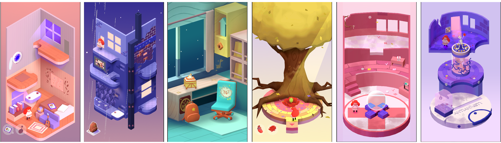
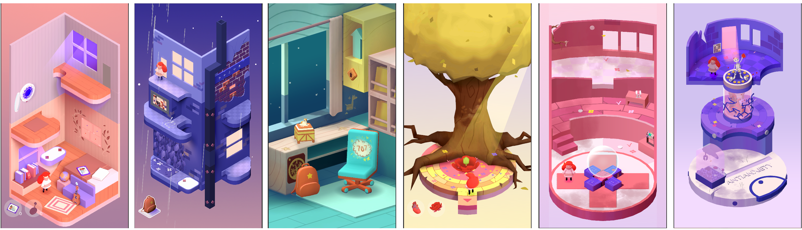

The Light Within is a mobile puzzle story-driven puzzle game about mental health and self-help.
The game focuses on a girl named Erin, who is struggling with her mental health and must face challenges in the form of puzzles in levels representing rooms in her mind.
Pomsky Games offered me the opportunity to work on this project as their freelance tech artist. Click here to learn more.
Responsibilities
Model and texture the environment puzzle based on concept
Animate environment assets and puzzles
Optimize levels assets to ensure it runs on mobile
Write custom shaders in shadergraph in Unity
Project Information:
Project Length: June 2022 - Present
Role: Artist, Technical Artist
Software Used:


 
